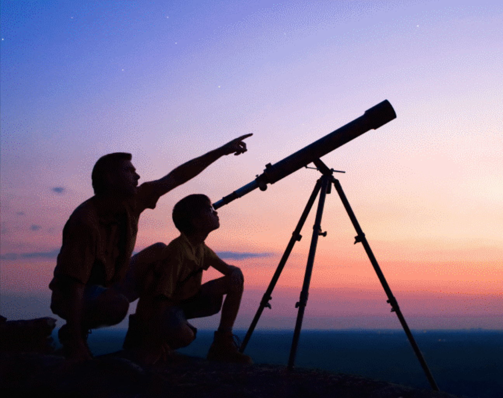

THE PROBLEM
With the colonisation of all planets in the solar system and commercialisation of space travel, lakhs of spacecrafts are travelling at the same time in space. Moreover, 27,000+ pieces of orbital debris, or “space junk,” has been tracked. Much more debris, too small to be tracked, but large enough to threaten human spaceflight and robotic missions, exists in the near Earth space environment.
To regulate their movement, and to avoid collisions between orbital debris/meteoroids or asteroids, Dusk has come up with a simple yet effective solution.